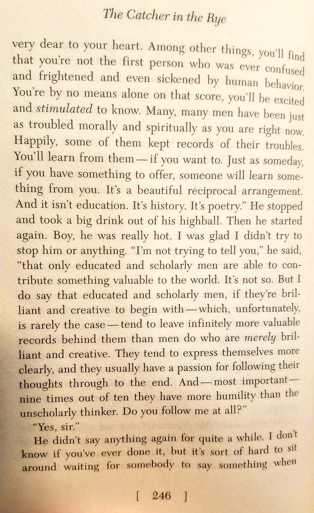
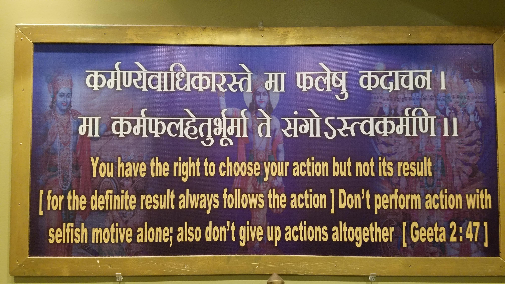
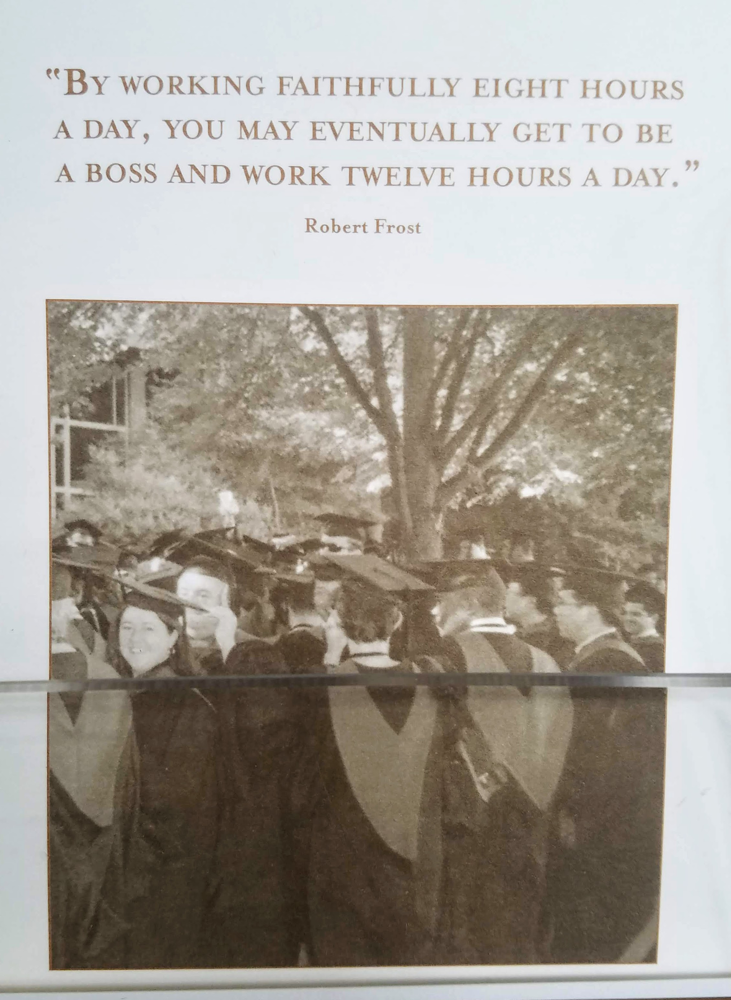
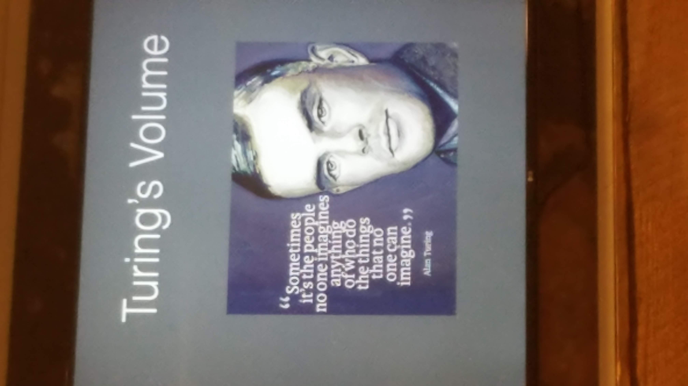
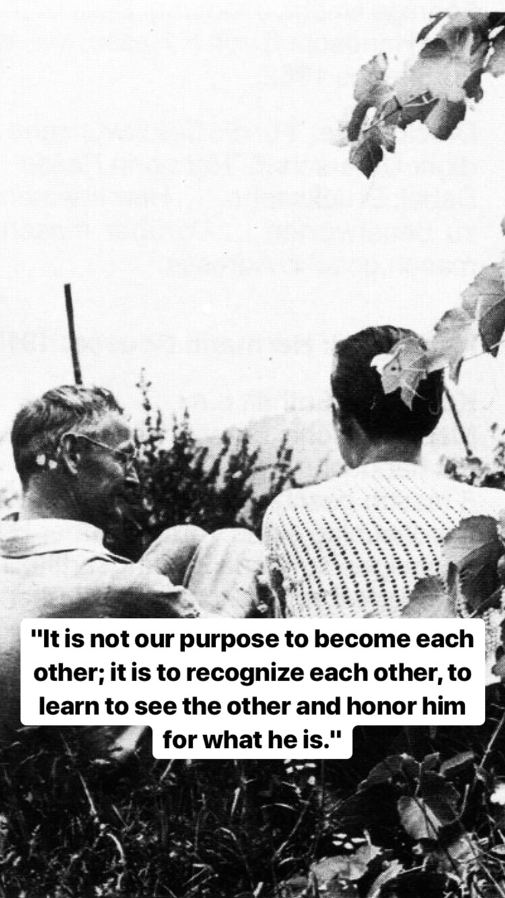

I remember I would get up with a word or words, a sentence(s), a phrase(s) which caused me to look up those words as soon as I get up or these word(s) would remain in me all day or days. I felt comfort in finding answers, getting clarity from ambiguity and messiness and a solution to satisfaction - understanding - these were done through simply reading, writing and reflecting, alone. a word after a word made a sentence, a paragraph to paragraphs, a page to pages, a article to articles to a book. These collection of words made sense to me when things went really blurry and dark around me. Here are some words, phrases, scriptures ... etc. that I collected in the past.
The Catcher in the Rye is a novel by J.D. Salinger, the message on this page 246 resonated with me
I visited a Hindu temple and saw this Bhagavad Gita scripture framed on the wall. (Below)
(L)I was at a museum shop and saw this card which made me think about my own education and others. I found it to be ironic, absurd, mind-boggling and funny
(R)I was at a conference and one of the speakers shared Alan Turing's words - meaningful.
 Hermann Hesse speaks to me deeply, precisely. I admire his writing and here is one of his timeless words from nitch.com
I don't think these word-search-finding answer-sharing activities were meant to become a hobby, but it became one, unintentionally - I find myself doing it in my spare time. Even when I am occupied, my mind wonders to a different dimension where I wander about wonders, searching for meaning or trying to understand what I am doing, unsure about and how it applies to me at that very moment. This activity became a big part of me, as people might call it "hobby" - how do I do it? By being curious, asking questions, trying to understand, start reading as Feynman taught his students, "Study hard what interests you the most in the undisciplined, irreverent and original manner possible." This 'undisciplined, irreverent and original manner' to me is the easiest task I could find to flow into.
There are numerous reasons that I can think of but just to say a few
She looks beautiful reading. Image by Luriko Yamaguchi
All this lead me to start collecting words, quotes, pages, paintings, animations, poems and whatever I stumble acrossed which I knew yet I was unable to articulate them but there they were already written and expressed before my eyes. It's like a piece of me that was lost and found through these words of men and women in the past and now across the world. I saved them in
You will find the numbered references in the order of appearance above